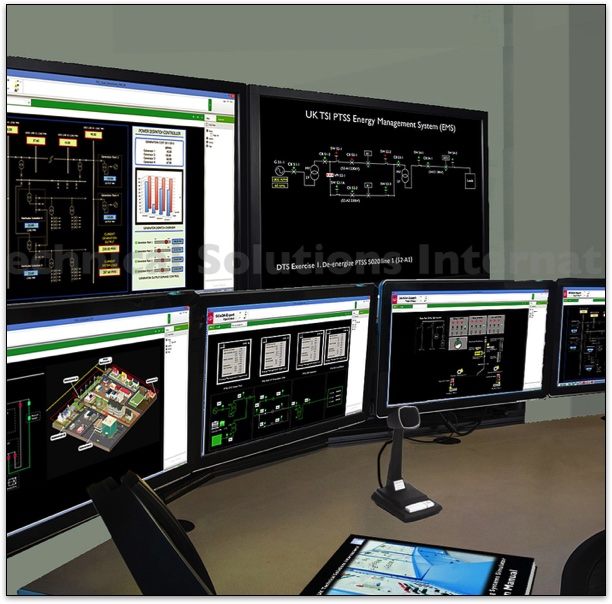
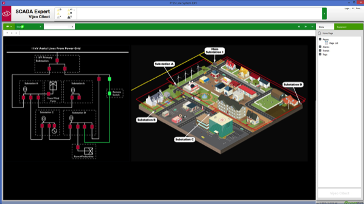

Power Dispatcher Training Simulator System
The PTSS/DTS100 is a unique extension package for the TSI Power Training Systems Simulator. It provides a dynamic Power Dispatcher Training Simulator that closely models current industrial practice.
By utilising the PTSS SCADA system and the PTSS Instructor Station our new DTS software system provides a comprehensive range of facilities that allow instructors to interact with trainees as they perform system control operations under a number of controlled faulted and non- faulted Energy Management System (EMS) scenarios.
One of the most important aspects of the TSI system is that it interacts directly with the PTSS hardware units. This allows us to create very realistic dispatcher training situations where they are able to issue work orders and direct maintenance staff to perform operations on a real “live” system.
The Instructor is able to work behind a special screened area so that their actions cannot be observed by the trainee. a two- way communication system allows them to interact with the dispatcher trainee, who in turn is able to use the same system to issue work instructions to the trainees working on the simulator hardware.
Links to the hardware simulator are via a wireless network connection allowing the complete instructor station to be housed in a separate room with a viewing window overlooking the DTS Simulation and the hardware system.
The DTS user interface displays the state of the transmission system on computerised one-line diagrams with controllable points for simulated operation of plant such as switches, circuit breakers or transformer tap-changers.
The PTSS SCADA system, provides collection and assimilation of data from the system hardware and transmits operator instructions back to the various items of plant. A series of SMART Meters within the hardware system measure power flows and voltages on the transmission system and the SCADA system responses to disturbances such as line trips, relay action, and generator-demand mismatch.
The model provides representations of plant such as lines, generators, transformers, circuit breakers and capacitors. The DTS System can set the generator’s dynamic characteristics and limits, in particular its voltage regulation, maximum generation, and rate of change of output.
Designed for Training - Built for Realism
The PTSS/DTS100 is supplied complete with a series of ready- made training scenarios that enable the Instructor to present realistic situations where the trainee dispatcher has to respond to the realtime data displayed on the system screens.
In addition to providing training for the dispatcher, we are able to add a second level of interaction where they can direct plant engineers and technicians to perform corrective or restorative actions on the hardware simulator.
Each lesson covers a different activity that is modelled on real industrial examples.
They will issue verbal commands to the trainees working on the PTSS Simulator hardware to perform manual switching operations and any tag out/lock out procedures as required by the work orders. These activities can be carried out on simulated electrical plant that is representative of typical units in service in the field.Any diagnostics required to direct the plant operatives will be obtained from the status of the various indicators on the EMS mimic.
This will include power flow meters, circuit breaker status indicators, protective relay flays and manual switch position indicators. They are even able to direct the power plant operators to change the generator parameters such as change of output, maximum output voltage and voltage regulation.
